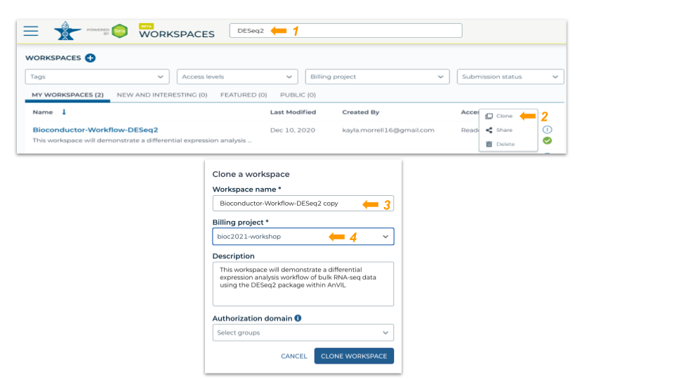
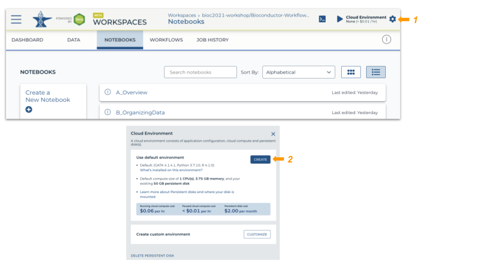
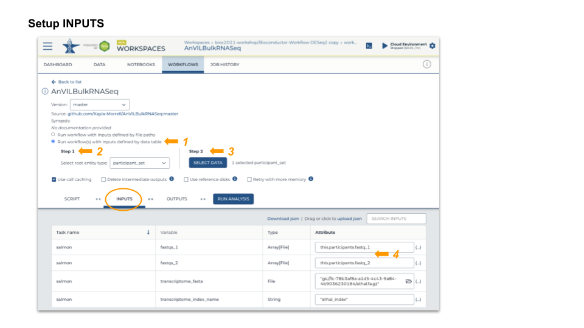
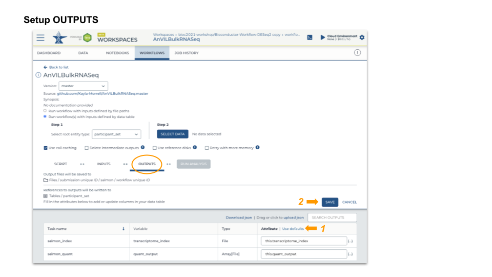
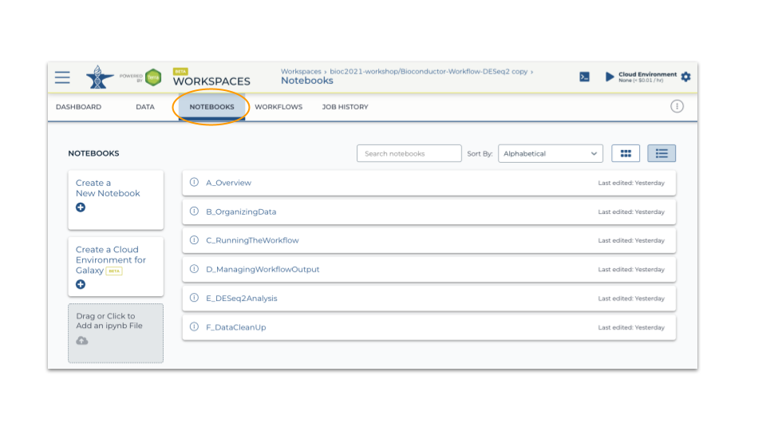

This workspace performs bulk RNASeq differential expression from FASTQ files. Salmon quantification step is implemented in WORKFLOWS and the downstream analysis by DESeq2 is available under NOTEBOOKS.
 3. Start a Jupyter Notebook interactive environment


root@...> R
options(Ncpus = 2) # faster installation, even if runtime 'oversubscribed'
BiocManager::install(ask = FALSE) # update installed packages
pkgs <- c("Bioconductor/AnVIL", "GenomicFeatures", "tximport", "DESeq2")
BiocManager::install(pkgs) # latest AnVIL packageNotebooks A, B and C describe how the workspace was set up; review at your leisure. This material may be useful when running on your own data.
Notebook D_ManagingWorkflowOutput
Notebook E_DESeq2Analysis
